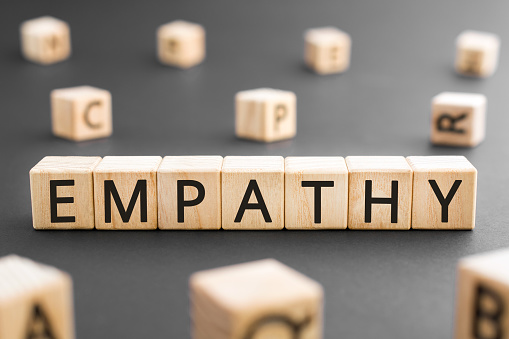
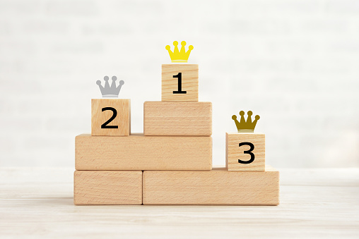
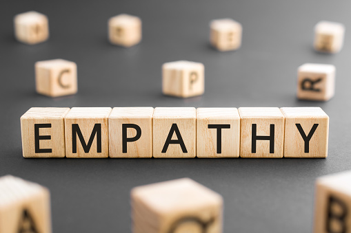
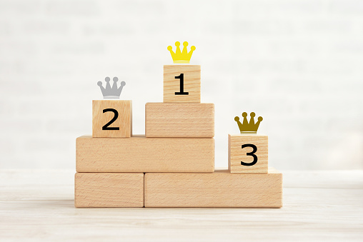

My Skills
Empathy
Everything starts with the user and keeping them at the front of the design
process is critical. I want to understand their immediate frustrations
and limitations to create a more memorable experience. Seeing the issues from
their point of view is the best place to start when designing a product.

Hierarchy
Using Visual Hierarchy to create a memomrable experience for
the user is a top skill. I accomplish this by having key elements organzied so users easily
take in all the information and can navigate the product. Having good Visual Hierarchy
can create a memorable experience, creating a repeated user.

Research
In order to develop prodcuts that satisfy user needs you first need to know
who your user is, what frustrations they have, and what their needs are. I
gather all of this information being conducting interviews, surveys, and other
web-based research methods.

Empathy
Everything starts with the user and keeping them at the front of the design process is critical. I want to understand their immediate frustrations and limitations to create a more memorable experience. Seeing the issues from their point of view is the best place to start when designing a product. 
Hierarchy
Using Visual Hierarchy to create a memomrable experience for the user is a top skill. I accomplish this by having key elements organzied so users easily take in all the information and can navigate the product. Having good Visual Hierarchy can create a memorable experience, creating a repeated user.
Research
In order to develop prodcuts that satisfy user needs you first need to know who your user is, what frustrations they have, and what their needs are. I gather all of this information being conducting interviews, surveys, and other web-based research methods.